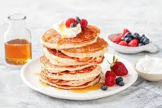

Pancakes

Description
The Easiest Recipe for the Fluffiest Vegan Pancakes. You can enjoy them in the morning or all day long!
Ingredients
- 1 cup flour(125 g)
- 2 tablespoons organic sugar
- 1 tablespoon baking powder
- ½ teaspoon salt
- 1 cup non-dairy milk(240 mL)
Steps
- In a medium bowl, add the flour, sugar, baking powder, and salt, and stir to combine.
- In a medium bowl or liquid measuring cup, add almond milk, apple cider vinegar, and vanilla, and stir to combine
- Pour the liquid mixture into the dry mixture and whisk until smooth.